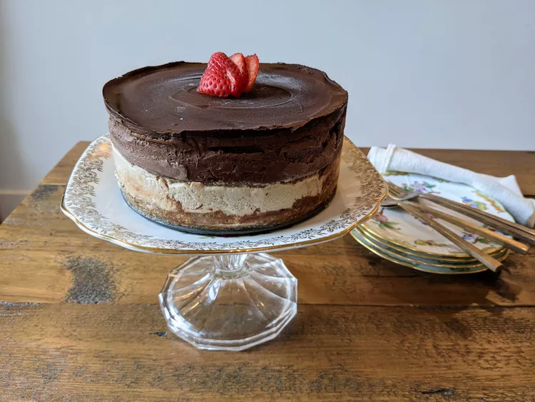

Vegan Mars Bar Cheesecake

Description
A chocolate caramel cheesecake that nobody would know is vegan! Everybody will love this sweet and much more wholesome version of cheesecake. I made this for my sister's birthday cake, and she kept raving about it. Seriously couldn't eat enough!
Ingredients
Caramel Sauce
- 1 cup cream of coconut
- 3/4 cup brown sugar
- 1/4 teaspoon salt
Base
- 1 1/2 cups almonds
- 1 cup pitted dates
- 2 tablespoons coconut oil
Chocolate Filling
- 9 ounces dark chocolate, chopped
- 2 teaspoons instant coffee granules
- 1 tablespoon boiling water
- 1 (12 ounce) package silken tofu
- 1/2 cup white sugar
- 1 tablespoon unsweetened cocoa powder, or to taste (Optional)
- 3 teaspoons vanilla extract
Topping
- 4 ounces dark chocolate
Steps
- Soak cashews in enough water to cover for 2 to 3 hours.
- Bring coconut cream, brown sugar, and salt for caramel sauce to a boil in a saucepan; reduce heat and let simmer until slightly thick, about 5 minutes. Transfer to the refrigerator; it will get thicker as it cools.
- Blend almonds, dates, and coconut oil together in the bowl of a food processor or an electric blender. Scoop out and pat down into a springform pan. Place into the freezer while you make the filling.
- Blend 2/3 cup caramel sauce and soaked cashews together in a blender for caramel filling; pour on top of the cake base. Place back into the freezer.
- Place dark chocolate for chocolate filling in the top of a double boiler over simmering water. Stir frequently, scraping down the sides with a rubber spatula to avoid scorching, until chocolate is melted, about 5 minutes. Dissolve coffee in boiling water. Transfer chocolate, coffee mixture, tofu, sugar, cocoa, and vanilla extract to a blender. Blend until smooth; pour onto cake. Return to the freezer.
- Place dark chocolate for topping in the top of a double boiler over simmering water. Stir frequently, scraping down the sides with a rubber spatula to avoid scorching, until chocolate is melted, about 5 minutes. Pour over the cake.
- Place cake back into the freezer until frozen, about 2 hours. Remove and let defrost for 5 to 10 minutes before cutting.